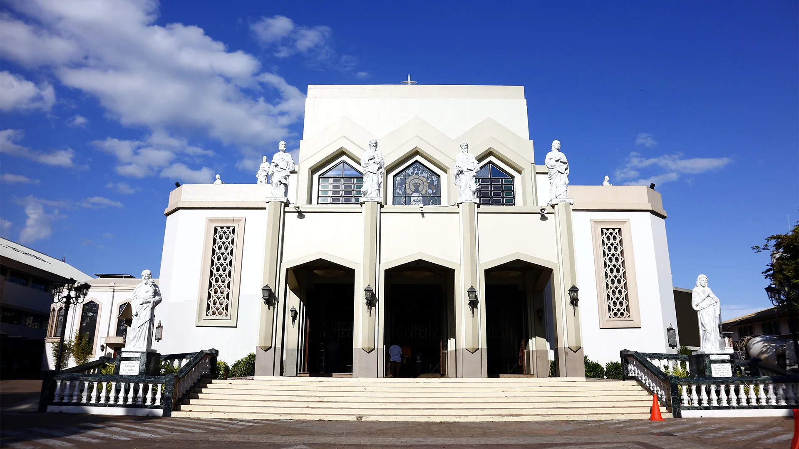
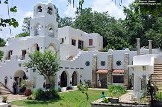

Top Attractions in Antipolo

Antipolo City Cathedral
A revered pilgrimage site, this historic cathedral houses the Black Madonna image that draws millions of devotees each year. Rich in religious and cultural significance, the structure offers a panoramic city view atop a hill.
Hinulugang Taktak Falls
Home to a 12‑meter waterfall and designated as a protected landscape and national park. The site features picnic areas, gazebos, viewing decks, and recreational facilities—perfect for scenic relaxation. Swimming is generally discouraged due to water quality concerns.

Pinto Art Museum
A stunning open-air museum on two hectares of botanical garden, showcasing contemporary Filipino art, sculptures, installations, and galleries. The Mediterranean‑inspired architecture makes it one of the most "Instagrammable" venues in the region.